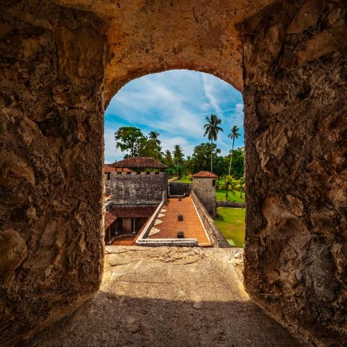
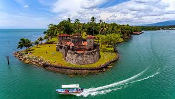

Turismo
Inicio
Lugares turísticos
Cultura
Castillo de San Felipe en Izabal
El Castillo de San Felipe es uno de los destinos turísticos más visitados del departamento de Izabal. Ubicado a orillas de Río Dulce, este sitio combina historia, naturaleza y nuevos espacios recreativos para visitantes. El lugar abre todos los días de 8:00 a.m. a 4:00 p.m. y ofrece recorridos por la fortaleza, áreas al aire libre y puntos para tomar fotografías. Actualmente, el castillo se mantiene como una opción para familias, viajeros y personas que buscan conocer uno de los íconos turísticos del Caribe guatemalteco.
El origen del Castillo de San Felipe se remonta al siglo XVI. En esa época, los españoles necesitaban proteger las rutas comerciales y las propiedades coloniales que se encontraban en la zona del Caribe guatemalteco. Los ataques de piratas ingleses eran frecuentes, así que decidieron levantar una fortaleza estratégica en la entrada del Lago de Izabal. Su función principal era impedir el paso de embarcaciones enemigas que buscaban robar mercancías o causar daños en los poblados cercanos.

Con el tiempo, esta estructura militar pasó por distintas modificaciones y reconstrucciones. Su importancia fue tanta que en 2012 fue incluida en la lista tentativa del Patrimonio de la Humanidad de la UNESCO. Este reconocimiento no solo destaca su valor histórico, sino también su papel dentro del desarrollo cultural de la región nororiental del país.
